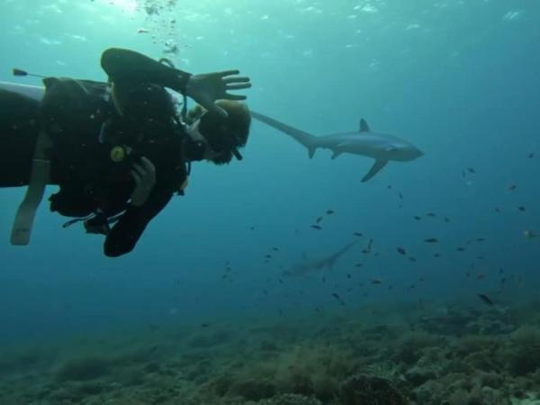
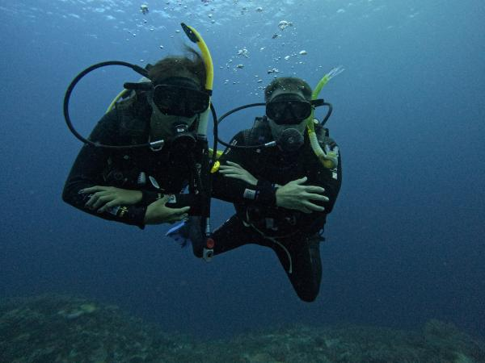
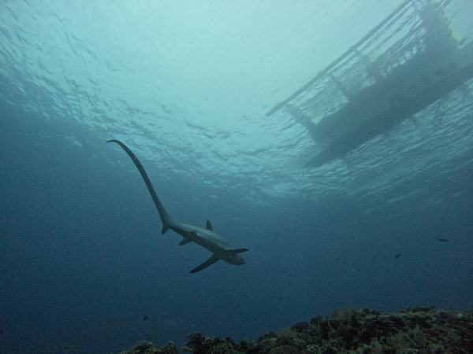
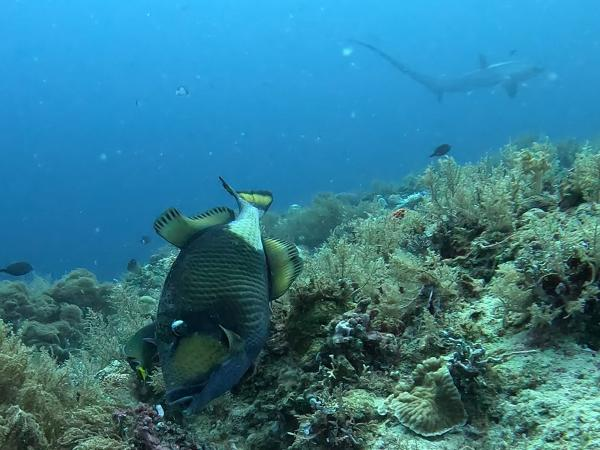

HOW TO GET TO MALAPASCUA ISLAND?
BOOK Private Transfer with us:
✔We will arrange a private transfer from Mactan-Cebu International Airport or from your accomodation directly to Maya Port
✔From Maya Port, we'll take you in a private boat to Malapascua Island.
By Public Transport:
✔Take a taxi or private car from Mactan-Cebu International Airport to the North Bus Terminal in Cebu City.
✔Board a Ceres Bus bound for Maya Port in Daanbantayan. The bus journey takes approximately 4 to 5 hours.
✔From Maya Port, take a public or private boat to Malapascua Island.

Malapascua Island
is renowned for its exceptional diving, especially for thresher shark encounters. It offers rich marine biodiversity, including vibrant coral reefs and diverse marine life. The island's dive sites cater to all levels of divers and feature opportunities for macro photography and wreck diving. With year-round diving conditions, Malapascua is a top destination for unforgettable underwater experiences.
One of the main attractions of Malapascua is the chance to dive with Thresher Sharks. These magnificent creatures, known for their long tails, can be seen year-round at Kimud Shoal, a popular cleaning station where divers have a high probability of encountering these elusive sharks. The experience of swimming alongside these gentle giants is truly unforgettable.
Malapascua is not just about Thresher Sharks. The island's stunning coral reefs are teeming with vibrant fish, sea turtles, eels, and more. For those who love finding tiny creatures, Malapascua offers excellent critter hunting opportunities. You can spot nudibranchs, pygmy seahorses, crabs, and shrimps as you explore the underwater world.
For those interested in wreck diving, the Dona Marilyn offers an exciting adventure. This shipwreck, which sank in 1988, is now home to a variety of marine life and provides a unique diving experience.
Just off the coast of Malapascua, Gato Island is a must-visit for divers. This island features underwater caverns and tunnels, as well as a wide array of marine species, including white-tip reef sharks, sea snakes, and cephalopods. The underwater landscape is both beautiful and mysterious, making it a favorite among divers.
The best time to dive in Malapascua is from January to May, when the conditions are ideal with good visibility and calm seas. April and May are particularly great for spotting shoals of hammerheads.
Malapascua is home to several reputable dive shops and liveaboards that cater to divers of all levels. These dive centers offer guided tours, equipment rentals, and expert advice to ensure a safe and enjoyable diving experience.

Malapascua Diving: A Premier Underwater Experience
When it comes to premier diving destinations, Malapascua Diving stands out as one of the top spots for divers around the world. Located in the Central Visayas region of the Philippines, Malapascua Island has gained international acclaim for its unique and vibrant underwater ecosystem. If you're planning a dive trip, Malapascua Diving should be at the top of your list.
Why Choose Malapascua Diving?
Malapascua Diving offers an unparalleled experience for both novice and experienced divers. Known primarily for its thresher sharks, Malapascua Diving allows you to witness these magnificent creatures in their natural habitat. Kimud Shoal, the most famous dive site for thresher sharks, is a must-visit for anyone diving in Malapascua.
In addition to thresher sharks, Malapascua Diving provides opportunities to explore stunning coral reefs, diverse marine life, and incredible underwater formations. Dive sites such as Gato Island, Lighthouse Reef, and the Dona Marilyn Wreck each offer unique diving experiences, making Malapascua Diving a versatile destination for all kinds of divers.
Dive Sites of Malapascua Diving
Kimud Shoal: The crown jewel of Malapascua Diving, Kimud Shoal is the best place to see thresher sharks. The early morning dives at this site are a once-in-a-lifetime experience.
Gato Island: This site is a marine reserve and sanctuary for sea snakes. The underwater tunnels and vibrant marine life make it a highlight of Malapascua Diving.
Lighthouse Reef: Popular for night diving, Lighthouse Reef features mandarin fish and other nocturnal creatures. It's one of the unique experiences that Malapascua Diving offers.
Dona Marilyn Wreck: A thrilling wreck dive, this sunken ferry is now home to a plethora of marine life. Exploring this site is a testament to the diversity of Malapascua Diving.
The Diving Community in Malapascua
One of the best parts of Malapascua Diving is the strong sense of community among divers. Dive shops and schools on the island offer various courses and certifications, ensuring that everyone, from beginners to advanced divers, can enjoy Malapascua Diving. Experienced instructors are ready to guide you through the beautiful underwater world, making Malapascua Diving a safe and enjoyable adventure.
Beyond Malapascua Diving
While Malapascua Diving is the main attraction, the island also offers a relaxed atmosphere perfect for unwinding after a day of diving. You can enjoy fresh seafood at beachside restaurants, take a stroll along the pristine beaches, or simply soak in the natural beauty of the island. The friendly locals and vibrant community add to the charm of Malapascua Diving.
Conclusion
In summary, Malapascua Diving offers an extraordinary underwater experience that is hard to match. With its diverse marine life, beautiful dive sites, and welcoming community, it's no wonder that Malapascua Diving is a top choice for divers worldwide. Whether you're chasing thresher sharks or exploring vibrant coral reefs, Malapascua Diving promises an unforgettable adventure.
SSI vs PADI: Choosing the Right Diving Certification
When it comes to scuba diving certifications, two of the most recognized organizations are Scuba Schools International (SSI) and Professional Association of Diving Instructors (PADI). Both offer comprehensive training programs, but there are some key differences that might help you decide which one is right for you.
1. History and Recognition
SSI: Founded in 1970, SSI is known for creating a complete teaching course curriculum. It is recognized globally and offers a wide range of courses from beginner to professional levels.
PADI: Established in 1966, PADI is the largest and most popular diving organization in the world. It focuses primarily on recreational diving and is recognized worldwide.
2. Certification Levels
Both organizations offer similar certification levels, but there are some differences in their names and structure:
SSI Certification Levels: Open Water Diver, Advanced Adventurer, Stress and Rescue Diver, Master Scuba Diver, and more.
PADI Certification Levels: Open Water Diver, Advanced Open Water Diver, Rescue Diver, Master Scuba Diver, and more.
3. Training Approach
SSI: Emphasizes a flexible learning approach, allowing divers to progress at their own pace. SSI courses are known for their emphasis on safety and proper techniques.
PADI: Offers a more structured approach with a strong focus on recreational diving. PADI courses are widely available and often have a larger number of dive centers offering them.
4. E-Learning Options
Both SSI and PADI offer e-learning options, allowing divers to complete the theoretical portion of their courses online at their own pace. This is particularly useful for those with busy schedules.
5. Specialty Courses
SSI: Offers a variety of specialty courses, including underwater photography, wreck diving, and more.
PADI: Also offers a wide range of specialty courses, such as boat handling, search and recovery, night diving, and emergency oxygen provision.
6. Digital Certification Cards
SSI provides digital certification cards, making it easier to prove credentials when traveling. PADI also offers digital certification cards, but the process may vary slightly.
7. Instructor Training
Both organizations require their instructors to undergo rigorous training to ensure they are experienced and knowledgeable. This ensures that divers receive high-quality training from qualified professionals.
Switching Between SSI and PADI
If you're considering switching from one certification to the other, it's important to check if your current certification is recognized by the other organization. Generally, SSI and PADI certifications are recognized globally, but it's always a good idea to confirm with the dive center you plan to visit.
In conclusion, both SSI and PADI offer excellent training programs, but the choice ultimately depends on your personal preferences and diving goals. Whether you choose SSI or PADI, you'll be well-prepared to explore the underwater world safely and enjoyably.

Unforgettable Thresher Shark Diving Adventures in Malapascua
Thresher shark diving in Malapascua is an extraordinary experience that attracts divers from all over the world. Malapascua Island, located in the Philippines, is renowned for its consistent sightings of thresher sharks. These magnificent creatures can be seen up close, making diving Malapascua a must-do for any avid diver.
One of the main reasons divers flock to Malapascua is the unique opportunity to encounter thresher sharks. These sharks are known for their distinctive long tails, which they use to stun their prey. The best time for thresher shark diving in Malapascua is early in the morning, when the sharks come up from the depths to be cleaned at Kimud Shoal, a submerged plateau that serves as their cleaning station.
Diving Malapascua offers more than just thresher sharks. The island is surrounded by a variety of dive sites that cater to all skill levels. From vibrant coral gardens and macro critters to deep walls and wrecks, there's something for everyone. However, the highlight for many divers remains the thresher shark encounters.
When planning a thresher shark diving trip to Malapascua, it's essential to choose a reputable dive operator. Experienced guides can ensure your safety and increase your chances of seeing these elusive sharks. Additionally, they can provide valuable insights into the behavior and conservation efforts surrounding thresher sharks.
In conclusion, if you're looking for an unforgettable diving adventure, consider thresher shark diving in Malapascua. With its rich marine biodiversity and the thrilling experience of seeing thresher sharks up close, diving Malapascua is sure to be a highlight of any diving enthusiast's journey.
The Diving Community on Malapascua Island
Diving Malapascua is not just about the underwater adventure; it's also about the community of divers who come together to explore the island's beauty. There are numerous dive shops and schools on the island, offering courses and certifications for divers of all levels. Whether you're a beginner or an advanced diver, the instructors here are experienced and ready to make your Diving Malapascua experience safe and enjoyable.
Beyond Diving Malapascua
While Diving Malapascua is undoubtedly the main attraction, the island also offers a relaxing atmosphere perfect for unwinding after a day of diving. Enjoy fresh seafood at beachside restaurants, take a leisurely stroll along the pristine beaches, or simply relax and enjoy the natural beauty of the island. The friendly locals and vibrant diving community add to the charm of Diving Malapascua.
Conclusion
In conclusion, Diving Malapascua offers an extraordinary underwater adventure that is hard to match. With its diverse marine life, beautiful dive sites, and welcoming community, it's no wonder that Diving Malapascua has become a top choice for divers worldwide. Whether you're eager to see thresher sharks or explore vibrant coral reefs, Diving Malapascua promises an unforgettable experience.

Ultimate Guide: Top 5 Dive Sites in Malapascua for Beginners and Advanced Divers
1. Kimud Shoal: The Thresher Shark Encounter
Kimud Shoal is the crown jewel of Malapascua diving, famous for its regular sightings of thresher sharks. These sharks are typically seen during early morning dives, attracted by the cleaning stations located on the shoal.
Highlights:
✔Early morning thresher shark sightings
✔Cleaning stations with various cleaner fish
✔Occasional manta ray encounters
2. Gato Island: Tunnel and Marine Life Haven
Gato Island offers a mix of underwater experiences, including a famous tunnel dive that’s safe for both beginners and experienced divers. The island is a marine reserve teeming with life.
Highlights:
- Underwater tunnel dive with soft coral formations
- White-tip reef sharks and sea snakes
- Rich biodiversity including nudibranchs and cuttlefish
3. Lighthouse Reef: Night Dive with Mandarin Fish
Lighthouse Reef is renowned for its magical night dives, where you can witness the mating dance of the mandarin fish. This shallow dive site is perfect for beginners and offers a unique nocturnal experience.
Highlights:
- Mandarin fish mating rituals at dusk
- Variety of nocturnal creatures like crabs and shrimps
- Shallow depth (around 6-12 meters)
4. Doña Marilyn Wreck: Historical Wreck Dive
The Doña Marilyn is a sunken ferry that provides a fascinating wreck dive experience. Covered in corals and home to various marine species, it’s a must-visit for advanced divers.
Highlights:
- Sunken ferry wreck from a 1988 typhoon
- Coral growth and marine life like lionfish and scorpionfish
- Depth ranges from 18 to 32 meters
5. Chocolate Island: Macro Paradise
Chocolate Island is a macro diver’s dream, offering rich and diverse macro life. This site is great for both beginners and advanced divers who enjoy muck diving and spotting tiny critters.
Highlights:
- Abundance of macro life including frogfish, pipefish, and seahorses
- Varied topography with sandy slopes and coral patches
- Shallow dive site with a maximum depth of 18 meters
1. What Makes Malapascua a Unique Diving Destination?
Malapascua is famous for its thresher sharks, which can be seen year-round at Kimud Shoal. The island also offers diverse dive sites, including shipwrecks, beautiful coral gardens, and vibrant marine life. Divers can explore everything from tiny critters like pygmy seahorses to majestic creatures like manta rays.
2. When is the Best Time to Dive in Malapascua?
You can dive in Malapascua all year round, but the best conditions are typically between November and May. During these months, the sea is calmer, and visibility is at its peak. However, the thresher sharks can be spotted throughout the year, making Malapascua a great destination any time.
3. What Dive Sites Should I Not Miss?
Kimud Shoal: The best place to see thresher sharks during early morning dives.
Gato Island: Known for its underwater tunnel and a haven for white-tip reef sharks.
Kimud Shoal: Offers encounters with hammerhead sharks.
Lighthouse: A popular spot for night dives and seeing mating mandarin fish.
Doña Marilyn Wreck: An excellent site for exploring a sunken ferry covered in corals.
4. What Certification Do I Need to Dive in Malapascua?
For most dive sites, you’ll need at least an Open Water Diver certification. However, to dive at Kimud Shoal to see the thresher sharks, an Advanced Open Water Diver certification is recommended due to the deeper depths but Open Water Diver Certified are still able to dive with requirements to do a deep dive or a private guide.
5. Are There Dive Shops and Schools on the Island?
Yes, Malapascua has several reputable dive shops and schools that offer various courses, from beginner to advanced levels. Many of them are PADI-certified and provide rental gear, guided dives, and professional instructors.
6. How Safe is Diving in Malapascua?
Diving in Malapascua is generally safe, thanks to the experienced dive operators and guides. It’s essential to follow the instructions of your dive master, check your equipment, and always dive within your limits. Emergency services and decompression chambers are available in Cebu City if needed.
7. Can I Combine Diving with Other Activities?
Absolutely! Besides diving, you can enjoy activities like snorkeling, island hopping, beach relaxation, and exploring the local culture and cuisine. Malapascua’s charm goes beyond its underwater wonders.
Once an Island Girl:
My Mesmerizing Journey to Malapascua Island
As an island girl at heart, my journey to Malapascua Island was nothing short of magical. From the moment I set foot on its pristine shores, I was captivated by the island’s natural beauty. The crystal-clear waters gently lapping against the white sandy beaches were a sight to behold. I spent countless hours swimming and snorkeling, marveling at the vibrant marine life just beneath the surface.
My adventure didn’t stop at the shoreline. I took the plunge into the deeper waters with free diving and scuba diving. The underwater world of Malapascua is a mesmerizing realm of colorful corals and diverse marine species. Each dive revealed new wonders, from playful schools of fish to the majestic thresher sharks that the island is famous for. The experience was both exhilarating and humbling, leaving me in awe of the ocean’s beauty.
Island hopping around Malapascua offered a different perspective of its stunning landscapes. Each island we visited had its unique charm, from secluded beaches to lush greenery. The views were breathtaking, and I felt a sense of wonder and adventure with every new destination. These excursions allowed me to appreciate the diverse beauty of the region and created memories that will last a lifetime.
During my stay, I was fortunate to experience the local culture firsthand. The island’s fiesta celebrations were a highlight, with weekly discos leading up to the main event. The vibrant music, lively dancing, and joyful atmosphere were infectious. I found myself immersed in the festivities, connecting with locals and fellow travelers alike. The sense of community and celebration was truly heartwarming.
One of my favorite moments on Malapascua was simply sitting by the shore, watching the horizon where the sky meets the crystalline waters. It was a peaceful and reflective time, allowing me to unwind and appreciate the island’s serene beauty. The tranquil environment provided a perfect escape from the hustle and bustle of everyday life.
Evenings on Malapascua were filled with delightful experiences. Whether it was enjoying a drink by the beach, savoring a delicious dinner, or listening to live music from local bands, each night was a celebration of life. The energy and camaraderie of these gatherings were invigorating, creating wonderful memories that I will cherish forever.
The island’s market was a culinary paradise, offering a wide array of food choices from fresh seafood to savory meats and vibrant vegetables. Dining at the market was a sensory delight, with the aroma of grilled dishes filling the air and the sight of colorful produce on display. It was also a melting pot of cultures, with travelers from around the world coming together to enjoy the local cuisine.
My time on Malapascua Island was an unforgettable journey of discovery, adventure, and connection. From the stunning underwater world to the vibrant local culture, every moment was filled with wonder and joy. As an island girl, I found a piece of paradise on Malapascua, and it will always hold a special place in my heart. If you’re seeking a destination that offers both natural beauty and rich cultural experiences, Malapascua Island is the perfect choice.